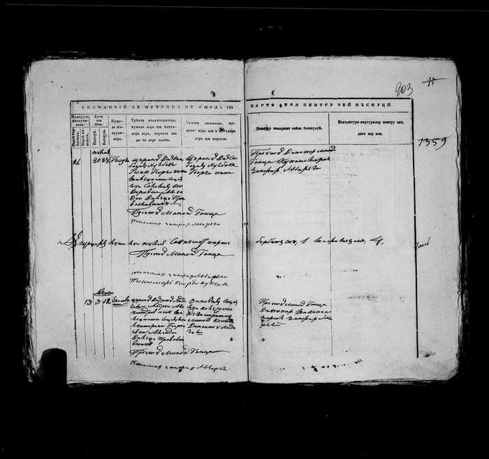
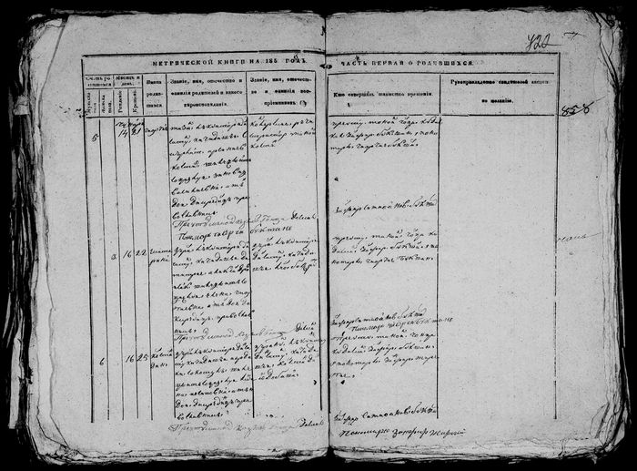
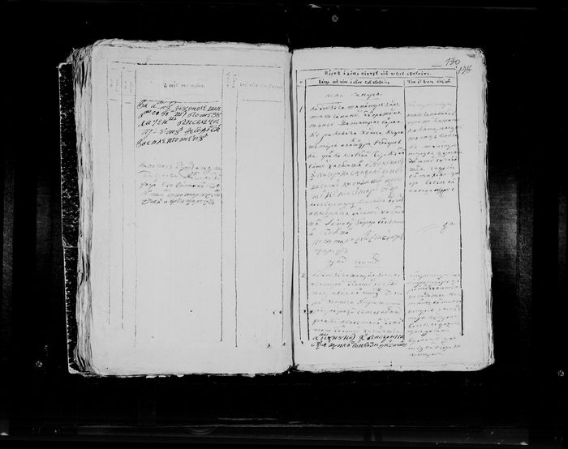

Parohia Ghidighici · română cu litere chirilice · cadru cu două pagini
ANA, fond 211, inv. 3, dosar 107, fila 903

Parohia Ghidighici · cadru cu două pagini
ANA, fond 211, inv. 3, dosar 103, fila 722

Parohia Ghidighici · cadru cu două pagini
ANA, fond 211, inv. 3, dosar 311